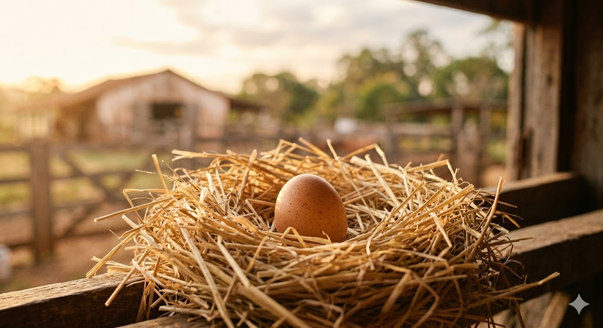
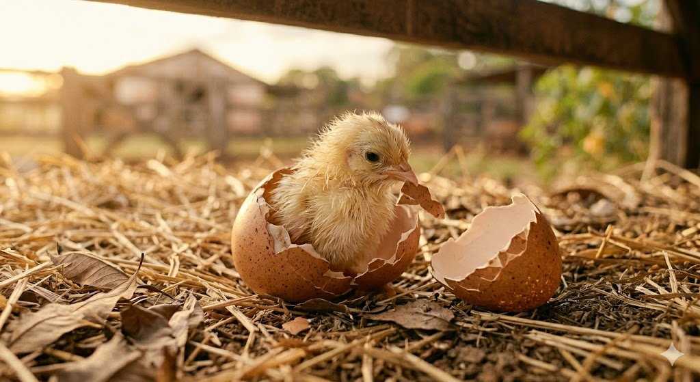
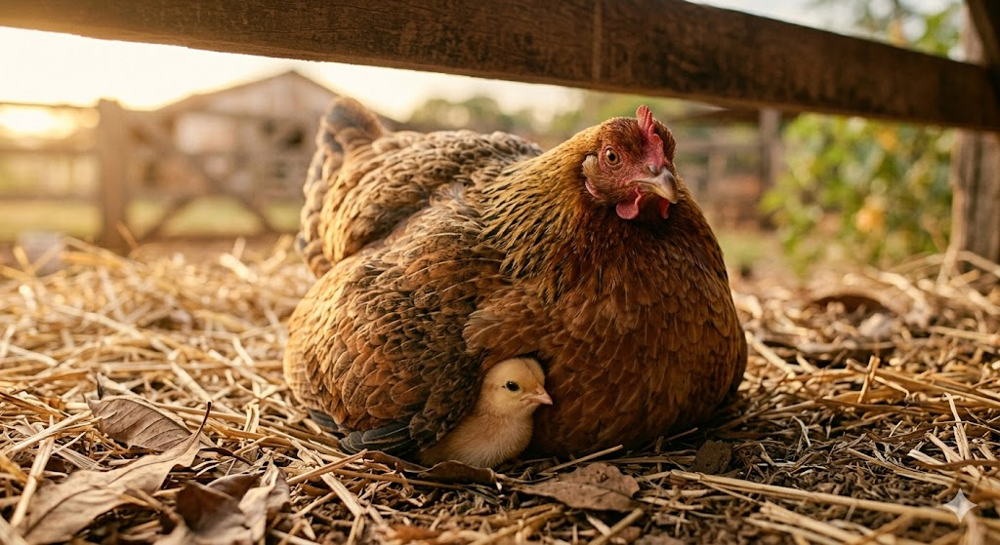
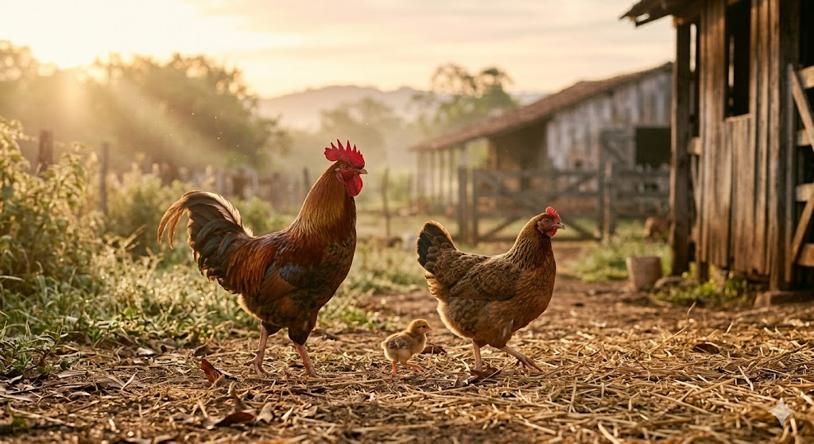

Parte 1
Dentro do ovo
Antes de ser visto, o pintinho cresce em silencio. A galinha aquece o ninho com paciencia, criando o ambiente ideal para a vida se formar com seguranca e calma.
Tudo começa quando a galinha choca o ovo com cuidado e calor, enquanto o galo vigia o quintal e completa a cena de uma nova vida que está prestes a nascer. Esta página conta, com um visual leve e moderno, o caminho de um pequeno pinto desde o ovo até seus primeiros passos curiosos pelo terreiro.

Cada fase do pintinho tem um encanto próprio: o abrigo do ovo, a descoberta do calor da mãe e a alegria dos primeiros movimentos pelo chão do quintal.

Antes de ser visto, o pintinho cresce em silencio. A galinha aquece o ninho com paciencia, criando o ambiente ideal para a vida se formar com seguranca e calma.
Chega o instante do primeiro rachado. Pequenos estalos anunciam a chegada do pintinho, que usa forca e instinto para sair da casca e conhecer o mundo.

Ainda fragil, ele busca abrigo debaixo das asas da mae. A galinha acolhe e orienta, enquanto o galo faz parte da cena do terreiro com presenca e vigilancia.

Aos poucos, o pintinho anda, observa o chao, escuta os sons do quintal e ganha confianca. O que era apenas um ovo agora se torna uma vida curiosa e vibrante.
"Toda grande jornada também pode começar com um pequeno bico rompendo uma casca."
Uma metáfora suave para o nascimento, a coragem e a descoberta.Este conteúdo foi pensado para transmitir aconchego, origem, cuidado e a beleza simples da vida no campo, com um estilo visual elegante e contemporâneo.
O resultado mistura sensibilidade e acabamento moderno para contar uma história simples de um jeito especial. Quando você gerar as imagens, elas poderão entrar com facilidade nesse layout, mantendo a mesma linguagem visual acolhedora e refinada.